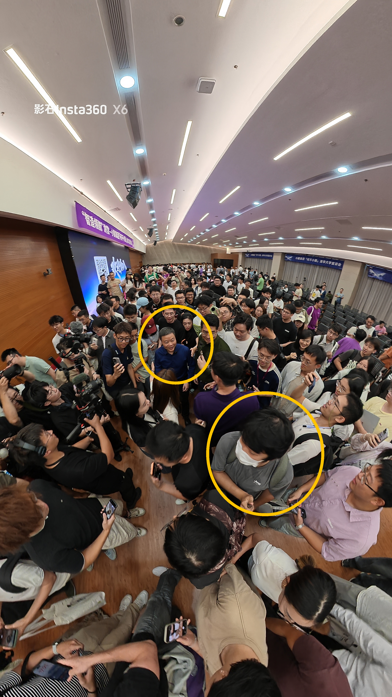
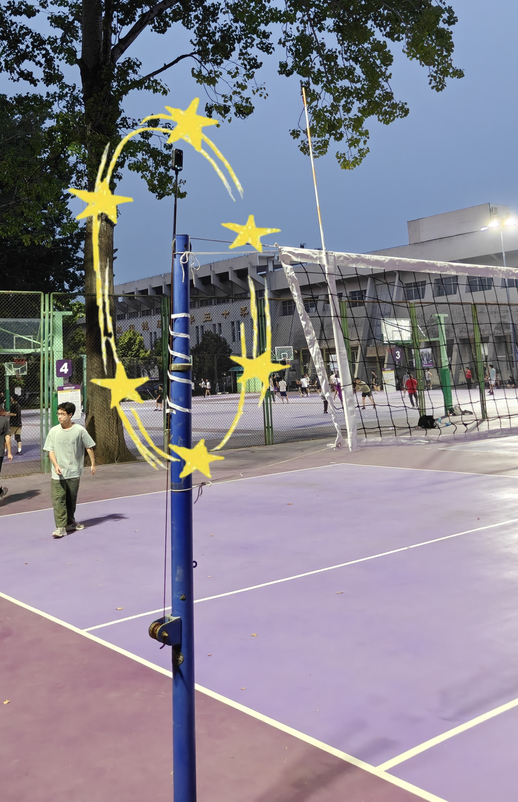

体验者
画像
体验场景
日常拍摄
先在可以重拍、随时调整的日常场景中熟悉“先拍摄、后取景”，感受 360° 带来的新视角和创作方式。
人群见面会
人群限制了移动空间，嘉宾停留短、遮挡多，正好观察全景记录能否在来不及构图时提高成功率。
排球运动
球路和攻防变化很难预判，固定机位容易漏掉关键动作。这个场景最能看出 360° 的价值，也最容易暴露真实问题。
日常拍摄
人群中的见面会

排球运动
同一场球两种叙事
把 X6 和排球博主常用的手机后排固定机位放在一起比较。区别不只是谁“拍得更多”，更在于谁能把比赛讲清楚。

赛事直播般的上帝视角，攻防流转尽收眼底。
镜头对准球场，却只拍到前排球员的背影。
起跳、扣杀、拦网，精彩发生在哪里都看得见。
最关键的一秒，常常恰好消失在人墙之后。
视角随球路推进、转向、放大，让每次攻防更有临场感。
画面始终不动，再激烈的比赛也少了叙事张力。
球飞得再高、再远，后期依然可以重新锁定。
固定构图无法预判球路，关键来回随时断片。
边线、球网与落点同屏呈现，争议回合也能回看判断。
触网看不清、落点拍不到，回放也还原不了现场。
同一段全景素材可分别重构双方视角，一次拍摄，双向复盘、双份高光。
固定镜头天然偏向拍摄侧，另一队常被压缩成远景与陪衬。
抬高视点，主动错开人物与顶灯、点光源，让轮廓和动作始终清楚。
人物与点光源挤在同一视线，轮廓被眩光吞没，关键动作失去细节。
手机记录一个固定画面，
X6
留住整场比赛的可能性。
三个场景，一个规律
横向比较三个场景，判断哪些问题普遍存在、哪些价值只有全景相机能提供，以及产品资源最值得投向哪里。
球场搭子
让全景相机不只站在场边录像，而是从架设、标记、回看到剪辑分享，陪用户打完一场球。
MATE
体验痛点：有了相机，然后呢？
X6 已经能完整拍下一场球，但真实使用中仍有几个痛点：设备难固定、好球来不及记、争议球不能马上看、长素材难定位，通用 AI 也还看不懂比赛。
能拍全场，
却架不稳
现场只能用胶带把延长杆粘在网柱上：固定慢、不够稳、拆卸麻烦，也缺少防坠保障。用户需要快速、稳定且不伤场地的标准机位。
好球刚打完，
时间点已忘
人在场上无法操作手机，继续打几个回合后便记不清高光发生在哪里。用户需要不打断比赛的一键标记。
AI 剪得动，
却看不懂比赛
现有 AI 成片常出现重点不明、视角乱变、运镜随机；它识别了“运动”，却没有理解球、回合和叙事主角。用户需要懂球且可调整的初剪。
最想回看时，
视频还没准备好
争议球需要裁判视角，好球需要即时分享快乐；价值窗口发生在现场，而完整导出与剪辑发生在赛后。用户需要近两分钟即时回看。
第一次拍，
不知道放哪里
高度、网柱位置、顶灯眩光和球场范围都会影响结果，新用户只能反复试错。用户需要与运动类型匹配的机位指引。
好方法分散，
每个人重新踩坑
机位、参数和成片模板依赖玩家经验，却缺少针对具体运动的沉淀入口。用户需要可复用的社区经验与模板。
功能设计——做你的“球场搭子”
面向隔网对抗运动的一套全景拍摄方案：专用配件负责快速架设，遥控器随手标记好球，球场模式与多模态 AI 负责理解比赛，再把长素材变成能即时回看、继续编辑和直接分享的内容。
硬件生态——先让相机真正站上球场
硬件要做的，是把现场临时用胶带固定、赛后凭记忆找时间点，变成稳定、顺手、可以重复的操作。
网柱固定套环 / 绑带
把延长杆快速固定在球网两侧支柱上，得到高位、稳定、对称，又不占场边空间的机位。
瞬间
“精彩瞬间”遥控键
在现有蓝牙遥控器上增加醒目的实体按键。好球发生后随手一按，就能在时间轴上留下标记，不用暂停比赛或掏出手机。
软件功能——从会拍到懂球
软件集中解决三个问题：第一次怎么拍、拍完去哪里学，以及长素材怎样变成看得懂的比赛内容。
专属模式与机位指引
选择运动类型后，根据球场、球网、顶灯和安全区域给出推荐网柱、安装高度与朝向，并用预览提示遮挡或眩光风险。
- 排球 / 网球 / 羽毛球预设
- 球场边界与球网自动校准
- 推荐机位、视场范围与稳定性检查
运动影像社区
按运动和场馆整理机位、参数、模板与成片，让零散的个人经验变成搜得到、用得上的拍摄方法。
- 机位与参数方案分享
- 横屏复盘 / 竖屏高光模板
- 同场双方共享素材与二创
懂比赛的 AI 剪辑
不再随机追逐画面里的运动物体，而是先建立球场坐标、切分回合，确认用户想讲谁，再生成可以修改的镜头和节奏。
- 多模态回合与高光识别
- 全场 / 追球 / 主队 / 单人叙事
- 所有镜头可调整、可撤销
AI 剪辑——先理解比赛，再决定镜头
这里展开软件功能 03：把画面、声音、遥控标记和比赛规则放在一起，先理解球场和回合，再生成镜头，避免通用 AI 一识别到运动就随意切镜。
建立球场坐标
识别边界与球网，确定有效运动空间、双方半场、可能球路与安全视场。
定位击球声
利用每次击打形成的规律音频峰值，定位触球瞬间，并为 BGM 卡点提供节奏锚点。
自动划分回合
结合击球间隙、球落地、人员停顿；正式比赛再叠加哨声，生成可浏览的回合时间轴。
先选择叙事用途
用户决定是看完整战术、追踪球路、突出主队，还是锁定某位球员，AI 不替用户猜唯一答案。
融合主客观高光
把遥控器标记与接球、扣球、拦网等动作识别结合，兼顾“算法认为精彩”和“用户觉得精彩”。
生成可编辑运镜
跟随球路推进、转向和放大；关键动作前预留建立镜头，动作后保留队友反应，避免随机跳切。
近两分钟，立即回看
手机端不用等完整导出：争议球切到全局裁判视角判断触网、打手或出界；好球打完，队友也能马上围在一起回看，把快乐留在现场。
同一段素材，两种理解
左侧是现有 AI 自动剪辑，说明“能生成”不等于“会讲比赛”；右侧是人工剪辑版本，为未来 AI 成片提供镜头和节奏参考。
剪得出来，但看不懂重点
懂回合，才知道镜头该去哪
人工版本不要求 AI 逐帧复刻，而是给出一套清楚的成片标准：每次切镜和运镜都要能回答“这一刻为什么看这里”。
一场球，六次陪伴
“球场搭子”把硬件和软件串成一条完整流程，让用户专心打球，不必在每个环节都切换成摄影师或剪辑师。
不只记录比赛
而是陪你打球
全景相机已经解决了“拍到全部”，下一步是让它在球场上真正好用。“球场搭子”从固定相机和随手标记开始，再接上比赛理解、即时回看与智能剪辑，让 X6 从场边的记录设备，变成球队每次都愿意带上的固定队友。
INSTA360 X6 · COURT MATE · PRODUCT CONCEPT体验边界
本方案基于有限场次和个人排球经验，目前仍是一组产品假设。下一步需要通过用户访谈，确认不同水平球员和内容创作者是否有相同问题，再判断真实优先级和可验证的设计机会。